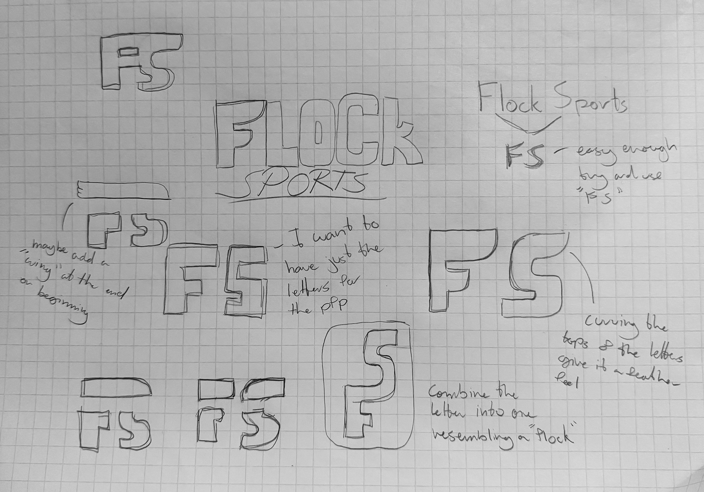
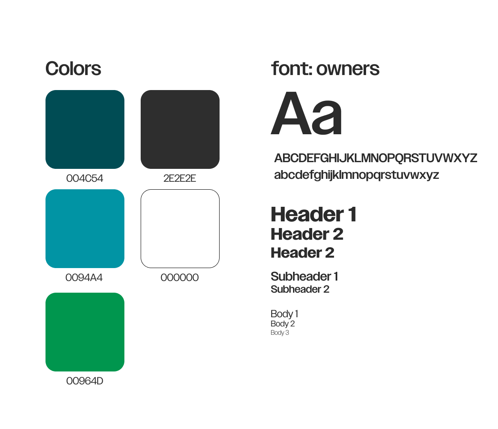

Flock Sports
Personal Project
Overview
I created Flock Sports as a social media brand designed for sports fans to engage and build a community around the Philadelphia Eagles. Through compelling and engaging visuals combined with high quality graphic design, it has generated millions of impressions.
Starting out as a solo project in 2023 there was no way I could have predicted how successful Flock Sports would become. Now let me show you how I did it.
*This project is in no way officially partnered with the Philadelphia Eagles
My Roles
A brand without a logo is just another face in the crowd
I needed a logo that was bold and easily identifiable. So I started looking for inspiration from the top Sports Media Brands in the US.
Initial Sketches
From these sketches I was able to focus on my final concept.
Now the brand guidelines
Lets not make it complicated, the brand has been established through the offical Eagles color palette. But lets put out own small twist too it. I found a great versatile and modern sans serif typeface called owners.
Templates, gameday graphics, and specialty artwork that bring the brand to life
Everyday templates
Consistency is key when it comes to expanding your brand. But sometimes you need to post news within seconds of it happening.Creating a set of templates that have a quick turnaround time will make or break you.
Gameday Graphics
Creating a visually striking and engagin graphic every single week is also extremely important. Keeping up with the Season shows your brand is active and interesting.
Specialty Graphics
Some moments deserve more than just a premade praphic Whether it's a player breaking a franchise record or a the team winning the Super Bowl. These are the stories that deserve extra attention. This is what elevates your brand, anyone can buy premade graphics... But one of a kind artwork attracts everyone.
Jersey Swaps
These are my personal favorite. Being able to see a new player in your teams jersey before they actually take the field creates a sense of anticipation and excitement.
Drag the slider.
Flock Sports isn't just another Instagram page... It's a living, breathing brand.
This project taught me the value of rapid designing, implementing user feedback, and the importance of keeping up with trends and staying consistent.